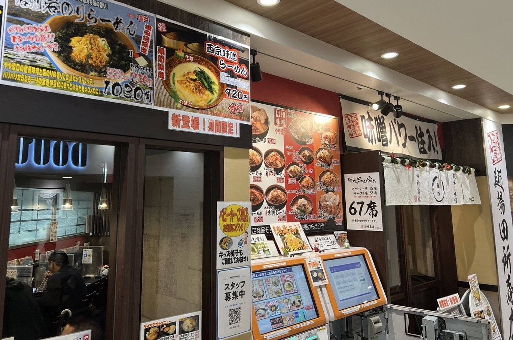
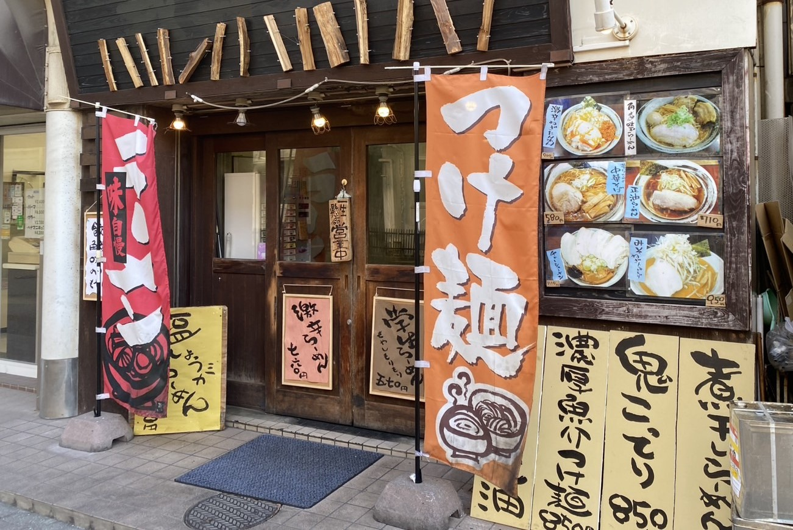
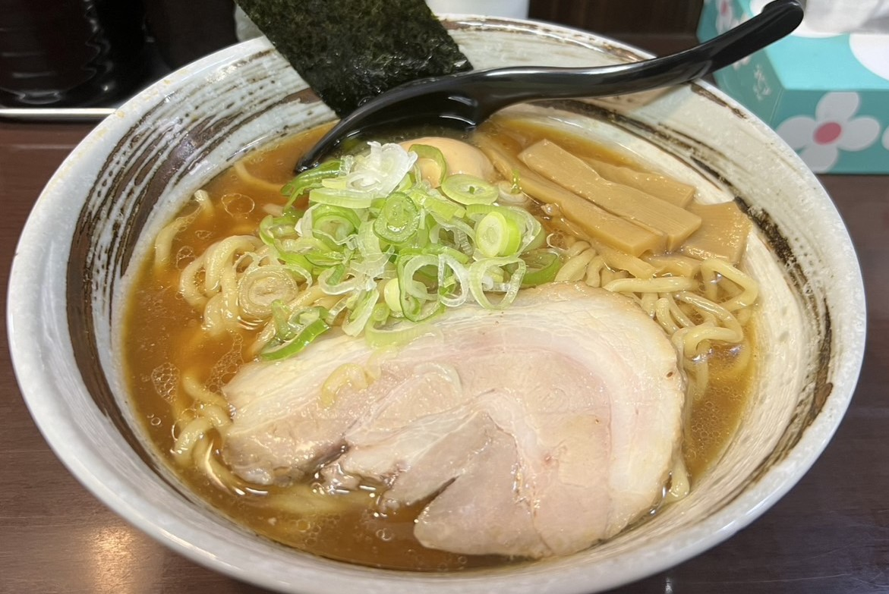

| 特徴 | 味噌ラーメン専門店で、北海道・信州・九州の味噌を選べます。 |
|---|---|
| アクセス | 約1分 |
| 住所 | 千葉県習志野市谷津7-7-1 Loharu津田沼1F |
| 電話番号 | 047-411-7111 |
| 営業時間・定休日 |
|
| 公式サイト | 麺場 田所商店 津田沼店 |


| 特徴 | 安くて昔ながらのラーメン |
|---|---|
| アクセス | 約1分 |
| 住所 | 千葉県船橋市前原西2-14-1 |
| 電話番号 | 047-477-9905 |
| 営業時間・定休日 |
|
| 公式サイト | 情報なし |